Trường ĐH Công nghệ – Đại học Quốc gia Hà Nội
class SuperUserManager { // Lớp quá lớn (Large Class)
public:
// Danh sách tham số quá dài (Long Parameter List)
void process(
User& u, Database& db, EmailService& mail,
Logger& log, int flag /*, ...*/) {
// Hàm quá dài (Long Method): hàng ngàn dòng!
// 1. Kiểm tra User (10 dòng)
// 2. Format HTML Email (20 dòng)
// 3. Lưu Database (100 dòng)
// 4. Ghi Log (15 dòng)
// ...
}
};
class Person {
std::string name;
// ...
std::string officeAreaCode;
std::string officeNumber;
std::string getTelephoneNumber() const {
return std::string("(") + officeAreaCode + ") " + officeNumber;
}
};
Nhận xét: Một lớp đang gánh công việc của hai lớp.
Person.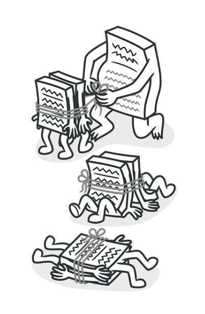
// Lấy khu vực giao hàng của đơn hàng
std::string region =
order.customer()
.address()
.zipCode()
.region();
Address đổi cách lưu trữ? (Ví dụ không dùng ZipCode nữa)
order ở dự án khác?switch (Switch Statement)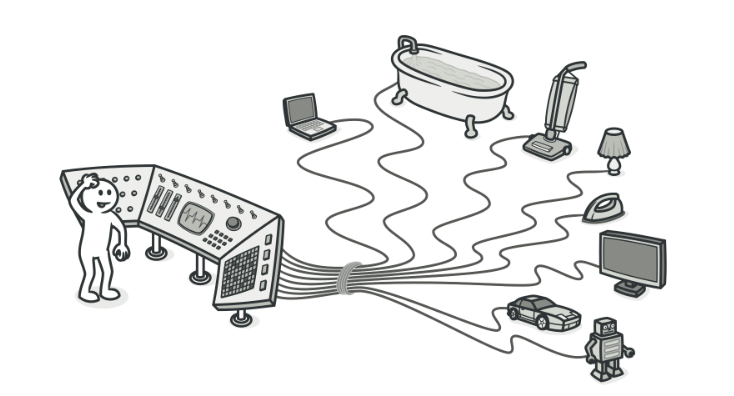
// Viết OOP nhưng tư duy Thủ tục!
void readData(DeviceType deviceType) {
switch (deviceType) {
case DeviceType::Keyboard:
readKeyboard(); break;
case DeviceType::PaperTape:
readPaperTape(); break;
// Thêm máy Scan?
// → Mở file và thêm case!
}
}
switchswitch bị copy-paste sang nhiều hàm| Mùi thiết kế | Nguyên lý thường liên quan |
|---|---|
| Sự phình to — Lớp/hàm quá lớn | S — Single Responsibility |
| Câu lệnh switch / Mã loại | O — Open/Closed |
| Sửa dây chuyền (Shotgun Surgery) | S — Single Responsibility |
| Phụ thuộc chặt vào chi tiết | D — Dependency Inversion |
| Giao diện quá lớn (Fat Interface) | I — Interface Segregation |
Đây là các nguyên lý thường liên quan, không phải ánh xạ một-một.
“Chỉ vì bạn có thể làm điều đó, không có nghĩa là bạn nên làm!”
Employee đang ôm cả calculatePay và store.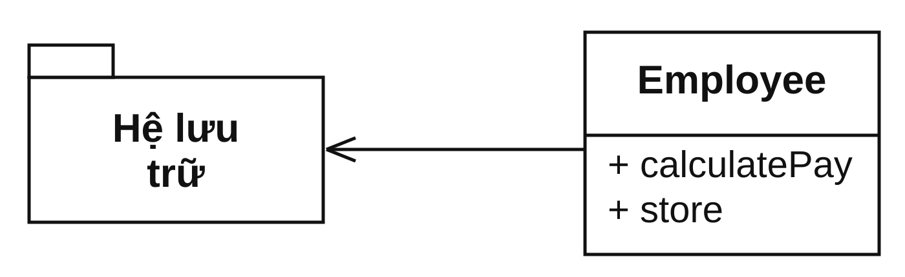
CalculatePay: phần nghiệp vụ.Store: phần lưu trữ.PayCalculator và EmployeeStore.
Tự hỏi 2 điều:
Nếu không, nên tách.
Trước: 1 lớp, 2 trách nhiệm
class Employee {
public:
// TN 1: Nghiệp vụ
Money calculatePay();
// TN 2: Lưu trữ
void store();
};
Sau: mỗi lớp 1 trách nhiệm
class PayCalculator {
public:
Money calcPay(Employee);
};
class EmployeeStore {
public:
void save(Employee);
};
Quy tắc nghiệp vụ thay đổi → chỉ sửa PayCalculator.
Đổi database → chỉ sửa EmployeeStore.
SRP dễ hiểu nhưng khó làm đúng.
class StudentService {
public:
void validate();
void calculateScholarship();
void exportCsv();
void sendEmail();
void writeLog();
};
class SaveAndSendReport {
public:
void save(const Report& r);
void send(const Report& r);
};
class UserService {
public:
bool validateEmail(std::string_view email);
void registerUser(const User& u);
void writeLog(const User& u);
};
“Một cuộc phẫu thuật não là không cần thiết khi đội một chiếc mũ!”
Phẫu thuật não = mở code cũ ra sửa · Đội mũ = thêm lớp/module mới bên ngoài, không chạm code cũ.
Bài toán: thêm chức năng mới mà ít phải sửa mã cũ nhất.
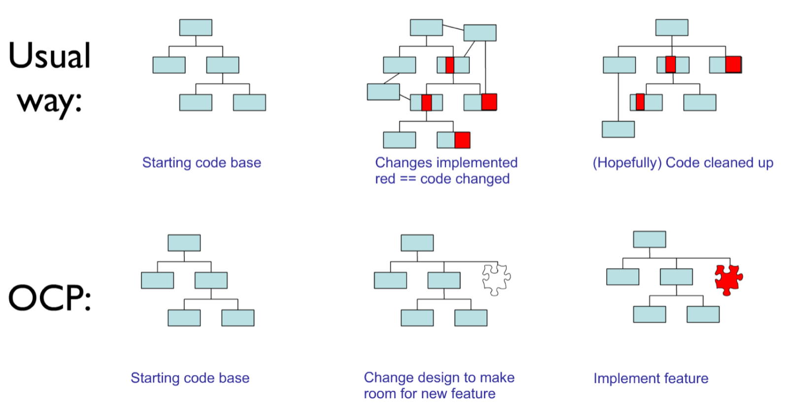
"Làm sao để thay đổi những gì một mô-đun làm mà không thay đổi chính mã nguồn của nó?"
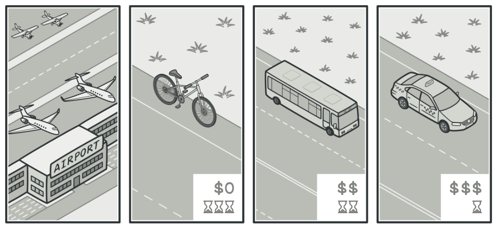
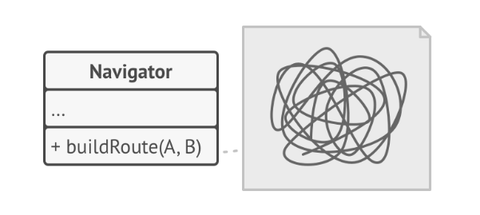
Yêu cầu chính: lập lộ trình tự động.
Navigator.Navigator.Kết quả: Mỗi thuật toán mới → Navigator lại phình to.
class Navigator {
public:
enum class RouteType { Road, Walking, PublicTransit, Bicycle };
void buildRoute(const std::string& start,
const std::string& end,
RouteType type) {
if (type == RouteType::Road) {
// ...
} else if (type == RouteType::Walking) {
// ...
} else if (type == RouteType::PublicTransit) {
// ...
}
// Muốn thêm xe đạp? → Mở file này ra và thêm else if!
else if (type == RouteType::Bicycle) {
// ...
}
}
};
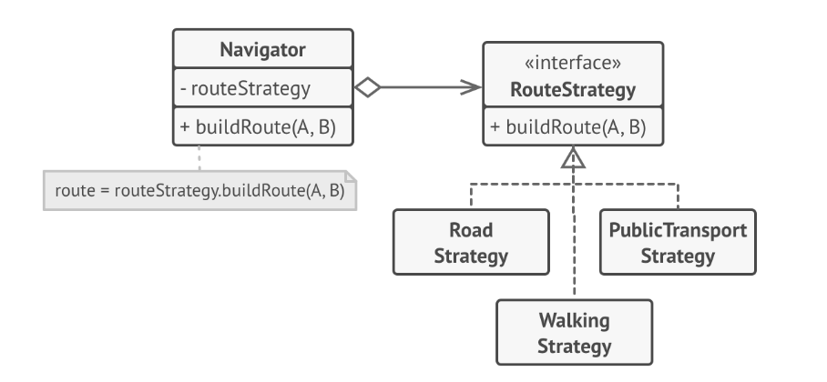
Gợi ý: Nhiều cách làm khác nhau → tách thành nhiều lớp.
Navigator là bối cảnh.RouteStrategy.
struct RouteStrategy {
virtual ~RouteStrategy() = default;
virtual void buildRoute(const std::string& start,
const std::string& end) const = 0;
};
class RoadStrategy : public RouteStrategy {
public:
void buildRoute(const std::string& start,
const std::string& end) const override {
std::cout << "Tìm đường đi nhanh nhất cho ô tô...\n";
}
};
// Thêm phương tiện mới → chỉ tạo lớp mới, KHÔNG đụng Navigator!
class Navigator {
const RouteStrategy* strategy = nullptr;
public:
void setStrategy(const RouteStrategy* s) { strategy = s; }
void executeRoute(const std::string& start,
const std::string& end) const {
assert(strategy != nullptr && "Strategy chưa được thiết lập!");
strategy->buildRoute(start, end);
}
};
RouteStrategyNavigator: không cần thêm if/else
Navigator hoặc giao diện.Ghi nhớ: "Đóng" với thay đổi này chưa chắc "đóng" với thay đổi khác. Không có thiết kế nào đúng cho mọi tình huống.
if/else.
RouteStrategy.
Cảnh báo: Đợi quá lâu → mã cứng lại → khó tái cấu trúc.
Navigator phải tự phối hợp nhiều chiến lược →
tách MultiModalStrategy.“Nếu nó trông như con vịt, kêu như con vịt, nhưng lại cần pin, thì có lẽ bạn đã thiết kế trừu tượng sai.”
Ở đâu dùng T, thay bằng S thì chương trình vẫn đúng.
struct Shape {
enum class Type { Square, Circle };
explicit Shape(Type type) : type(type) {}
Type type;
};
struct Circle : Shape {
Circle() : Shape(Type::Circle) {}
void draw() const {}
};
struct Square : Shape {
Square() : Shape(Type::Square) {}
void draw() const {}
};
// Hàm vi phạm OCP: mã sử dụng phải tự phân loại kiểu
void drawShape(const Shape& s) {
if (s.type == Shape::Type::Square)
static_cast(s).draw(); // ép kiểu xuống lớp con
else if (s.type == Shape::Type::Circle)
static_cast(s).draw();
}
Shape không có hành vi chung như draw().type và ép kiểu.Rectangle cho phép đổi rộng và cao độc lập.Square thì không.Vấn đề: Hàm g kỳ vọng Rectangle cho phép thay đổi chiều rộng và chiều cao độc
lập. Khi truyền Square vào, kỳ vọng đó bị phá vỡ → vi phạm LSP.
class Square : public Rectangle {
public:
void setWidth(double w) override {
Rectangle::setWidth(w);
Rectangle::setHeight(w); // giữ w = h
}
void setHeight(double h) override {
Rectangle::setWidth(h);
Rectangle::setHeight(h);
}
};
void g(Rectangle& r) {
r.setWidth(5);
r.setHeight(4);
// Mong đợi: width = 5, height = 4
if (r.getWidth() * r.getHeight() != 20)
throw std::runtime_error("Rectangle contract broken");
}
Rectangle đứng riêng thì hợp lệ.Square đứng riêng cũng hợp lệ.Square phá giả định của
mã dùng Rectangle.Quan hệ "là một" (IS-A): là về hành vi, không chỉ là tên gọi. Đúng về toán học chưa chắc đúng về thiết kế.
Rectangle::setWidth(w) hứa: width == w
và height giữ nguyên.Square::setWidth(w) phá lời hứa đó.Square kế thừa Rectangle.Shape.Rectangle và Square kế thừa Shape riêng.Kết quả: Không phá hợp đồng · Đúng bản chất hành vi.
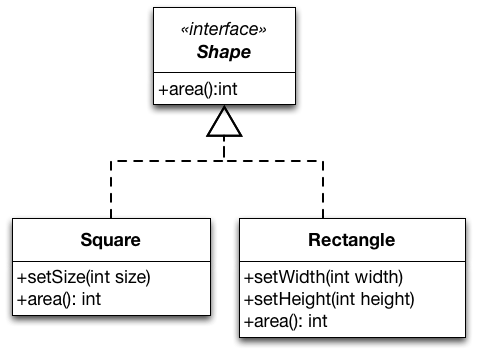
Câu hỏi: Đoạn code này có vi phạm LSP không?
class Bird {
public:
virtual void fly() { /* bay... */ }
};
class Penguin : public Bird {
public:
void fly() override {
throw std::logic_error("Chim cánh cụt không bay được!");
}
};
💡 Gợi ý: hàm nhận Bird& gọi fly() có hoạt động đúng với Penguin
không?
class TextDocument {
public:
// TĐK: chuỗi bất kỳ độ dài
virtual void addText(std::string_view text) {
content += text;
}
protected:
std::string content;
};
class SmsDocument : public TextDocument {
public:
// TĐK MẠNH HƠN: tối đa 160 ký tự → vi phạm LSP!
void addText(std::string_view text) override {
if (text.size() > 160)
throw std::invalid_argument("SMS too long");
content += text;
}
};
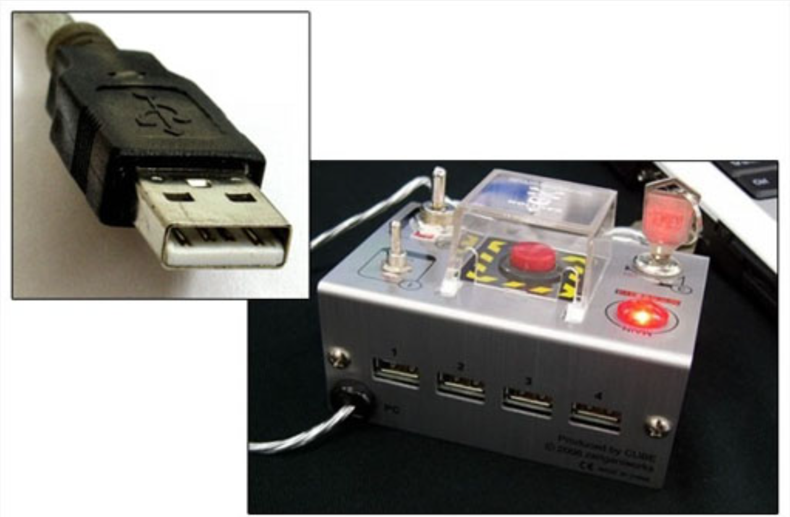
“Mã sử dụng không nên phụ thuộc vào những giao diện mà nó không dùng!”
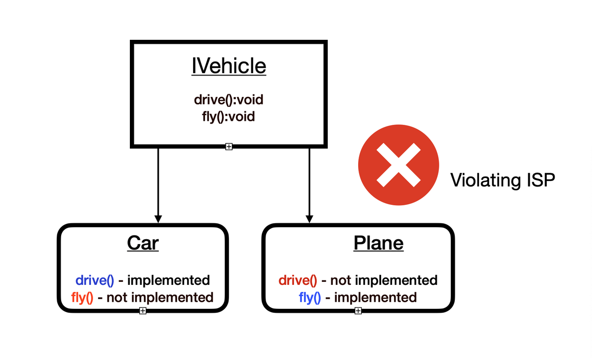
Door: khóa, mở khóa, kiểm tra mở.TimedDoor: thêm báo động khi mở quá lâu.NormalDoor phải cài timeout() vô
nghĩa.Door bị gắn chặt với bộ định thời.
struct TimerClient {
virtual ~TimerClient() = default;
virtual void timeout() = 0;
};
// SAI: Ép Door kế thừa TimerClient
struct Door : TimerClient {
virtual ~Door() = default;
virtual void lock() = 0;
virtual void unlock() = 0;
virtual bool isOpen() const = 0;
};
class NormalDoor : public Door {
public:
void lock() override { /*...*/ }
void unlock() override { /*...*/ }
bool isOpen() const override { return false; }
void timeout() override {
// Cài đặt thừa
}
};
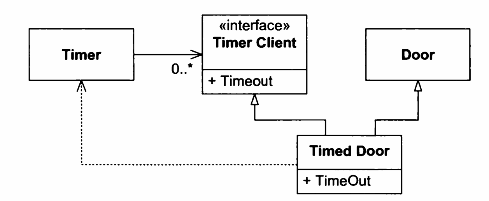
TimedDoor: Door + TimerClient.NormalDoor: chỉ Door.
// 1. Tách thành 2 giao diện nhỏ, độc lập
struct Door {
virtual void lock() = 0;
virtual void unlock() = 0;
};
struct TimerClient { virtual void timeout() = 0; };
// 2. Mỗi lớp chỉ kế thừa giao diện nó cần
class TimedDoor : public Door, public TimerClient {
public:
void lock() override { /* ... */ }
void unlock() override { /* ... */ }
void timeout() override { /* bao dong */ }
};
class NormalDoor : public Door {
public:
void lock() override { /* ... */ }
void unlock() override { /* ... */ }
};
NormalDoor không còn bị ép cài timeout()
vô nghĩa.
Mỗi lớp chỉ phụ thuộc vào giao diện mà nó thực sự dùng.
Câu hỏi: Giao diện này có vi phạm ISP không? Tách như thế nào?
struct Animal {
virtual void eat() = 0;
virtual void fly() = 0;
virtual void swim() = 0;
virtual void run() = 0;
};
💡 Gợi ý: Dog có cần implement fly()? Eagle có cần
swim()?
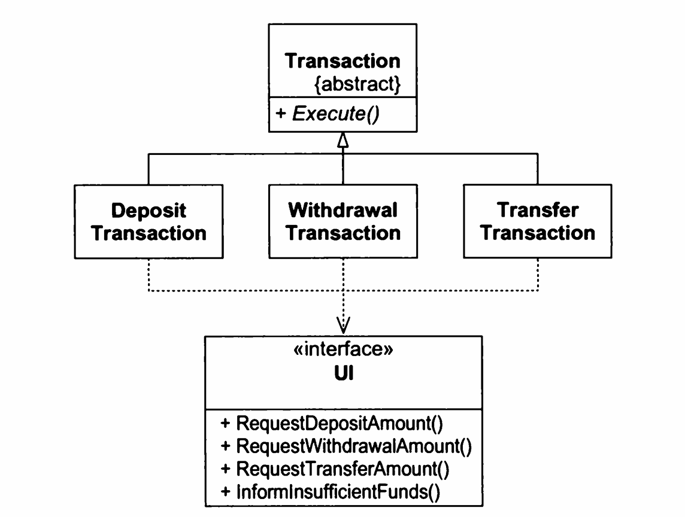
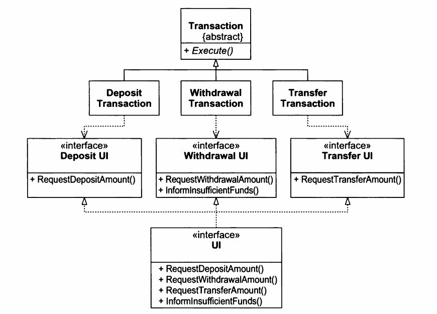
DepositUI, WithdrawUI,
TransferUI, ...
Lợi ích: Thêm IElectricBillUI → chỉ ảnh hưởng phạm vi nhỏ.
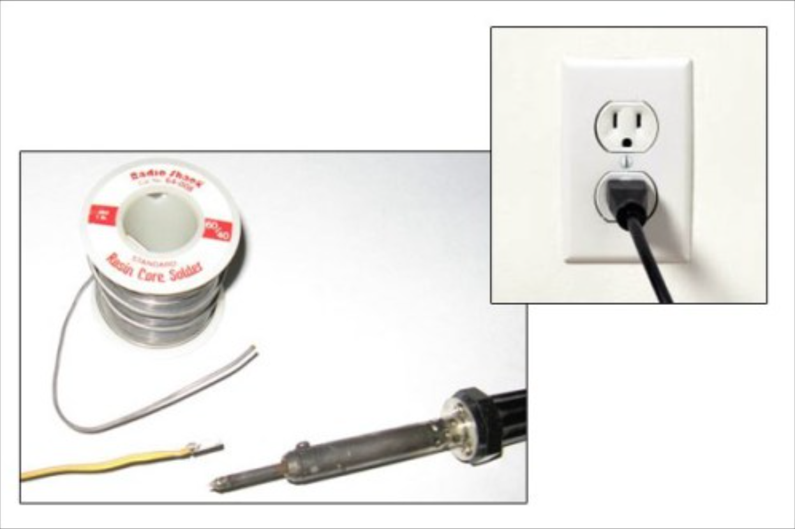
“Bạn có hàn trực tiếp một chiếc bóng đèn vào dây điện trong tường không?”
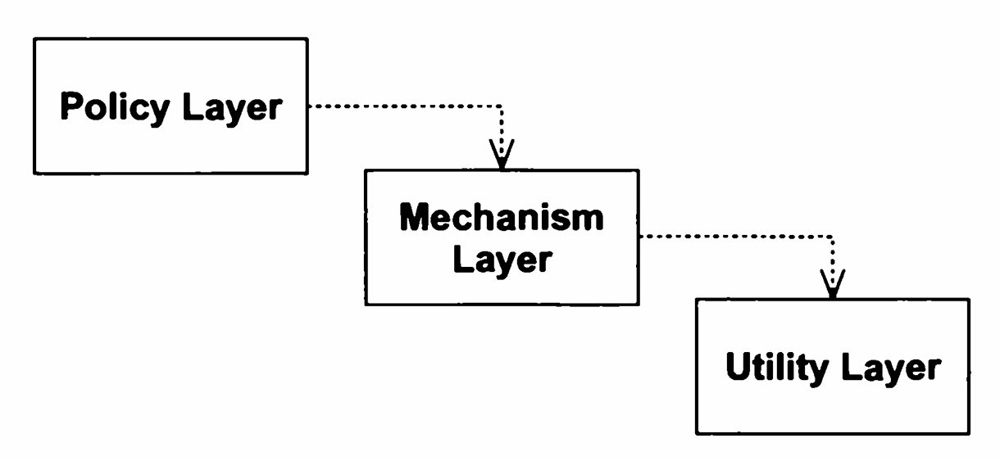
Vấn đề: Nâng cấp SQL driver ở tầng dưới cũng có thể kéo tầng trên biên dịch lại.
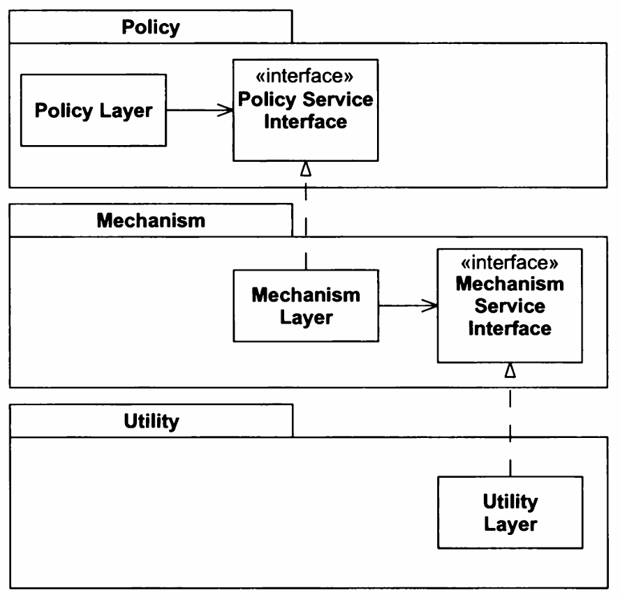
Policy định nghĩa.Ví dụ: "Tôi cần gửi tin nhắn chào mừng."
Điểm quan trọng: Ai sở hữu giao diện thì người đó làm chủ.
Nguyên tắc Hollywood (Hollywood Principle): "Đừng gọi chúng tôi, chúng tôi sẽ gọi bạn"
// Database đặt giao diện
struct ISqlDatabase {
virtual ~ISqlDatabase() = default;
virtual void execute(const std::string& sql) = 0;
};
// OrderService dính SQL
class OrderService {
ISqlDatabase& db;
public:
explicit OrderService(ISqlDatabase& db) : db(db) {}
void processOrder(const Order& order) {
// Trộn nghiệp vụ với SQL
db.execute("INSERT INTO Orders...");
}
};
// OrderService đặt nhu cầu của mình
struct IOrderRepository {
virtual ~IOrderRepository() = default;
virtual void save(const Order& order) = 0;
};
class OrderService {
IOrderRepository& repo;
public:
explicit OrderService(IOrderRepository& repo) : repo(repo) {}
void processOrder(const Order& order) {
repo.save(order); // Không biết SQL
}
};
class SqlOrderRepository : public IOrderRepository {
public:
void save(const Order& order) override {
// "INSERT INTO Orders..."
}
};
SqlOrderRepository.OrderService và IOrderRepository giữ
nguyên.Chốt: Đừng thiết kế theo công cụ. Hãy thiết kế theo nhu cầu nghiệp vụ.
Giới thiệu OOP
Nguyên lý thiết kế
Mẫu thiết kế
➡️ OOP cho công cụ, SOLID cho nguyên lý, mẫu thiết kế cho cách áp dụng lặp lại.